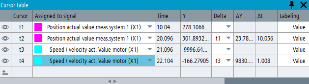

The measurement cursors can operate in the following two modes:
Active signal mode
When a new trace session is created, then two cursors exist by default. The cursors can only be switched on/off together and they are attached to the current active signal. If the active signal changes, both cursors are automatically assigned to the new active signal.
If the cursor table is used to assign another signal to the cursors, the assigned signal becomes the active signal.
Individual mode:
You can create up to 10 cursors using the cursor table (Expert Trace). If the trace session contains more than 2 cursors, they switch to "individual mode". This allows cursors to be individually assigned to different signals. The active signal change has no effect on which signals the cursors are attached to.
The visibility of each cursor can be individually toggled on/off from the cursor table. (Keyboard, toolbar or context menu actions that toggle cursor visibility still have an effect on all cursors.)
The change to "individual mode" is permanent while you are in the same trace session. Even if you delete the extra cursors until only the first two are present, they will not return to the "active signal mode".
The numerical values of the signals at the current cursor positions, as well as the differences between the cursor values, are displayed in the cursor labels and in the cursor table. For the first two cursors (t1 and t2) only, numeric values are also displayed in the signal table. If a signal at the current cursor position has no measured value, the value of the previous measuring point is displayed, e.g. when signals were recorded with different sampling rates.
The color of the cursor lines and the cursor label backgrounds follows the signal curve color. The label text is white over dark background colors and black over light background colors.
You can configure the format of the cursor labels in the context menu or in the cursor table. The visibility, format and positions of the trace widget cursor are saved in the trace session file and can be restored when the session file is reloaded.
The FFT widget has only 2 cursors, which operate in the "active signal mode" and their label format can be configured in the FFT context menu. FFT cursor properties are not saved in the trace session file.
Function | Keyboard | Mouse |
|---|---|---|
Toggle cursor on/off | <CTRL+SPACE> |
|
Move the cursor to the default position1) | <CTRL+SHIFT+SPACE> |
|
Activate 1st or 2nd (visible) vertical cursor | <CTRL+SHIFT+1> | Left-click in the cursor line |
Deactivate 1st or 2nd (visible) vertical cursor | <CTRL+SHIFT+1> | Left-click in empty diagram area |
Activate next (visible) cursor | <TAB> | Left-click in the cursor line |
You can move a measuring cursor by dragging it with the left mouse button held down, or on a touch screen by dragging it with your finger.
Function | Keyboard | Description |
|---|---|---|
Visit all One step | <ALT> + left/right arrow, press once | If you press this key combination once, the active cursor is moved in the selected direction to the next measuring point. |
Rough positioning In one step | <ALT> + <SHIFT> + left/right arrow, press once | If you press this key combination once, the active cursor is moved by 20% of the visible area in the selected direction. |
Move continuously normal speed | <ALT> + left/right arrow, press and hold | If you hold down this key combination, the active cursor is moved continuously at normal speed in the selected direction. |
Move continuously, higher speed | <ALT> + <SHIFT> + left/right arrow, press and hold | If you hold down this key combination, the active cursor is moved continuously at high speed in the selected direction. |
| Note |
An Expert Trace license is required to use this function, see "Expert Trace functions". |
The cursor table can be opened and closed using its toolbar icon. It can also be closed with the X symbol on the window frame. The widget can be docked into the application window, or (on PC/IPC only) undocked and used as a floating window.
The cursor table displays the properties of the currently existing cursors, including visibility, time (X) and signal (Y) values at the current cursor position, differences between cursor values, and label formats.
As long as either cursor t1 or t2 is visible, the values of all signals at the current cursor positions are also displayed in the signal table. If both t1 and t2 are visible, then the difference between them is displayed as well.
To switch a cursor on or off (show / hide), use its eye symbol in the cursor table.
To assign a cursor to another signal:
Select the signal name from the drop-down list. A cursor can only be assigned to a visible signal. Hidden signals are greyed out in the list.
Set the focus onto the identifier field of the cursor in the cursor table, i.e. on the field displaying t1, t2, etc. Then click on the signal curve in the trace widget to which you wish to assign the selected cursor.
To create a new cursor, click on the "Create new measurement cursor" icon in the last line of the table. The new cursor will be assigned to the same signal as the last existing cursor in the table. A maximum of 10 cursors can be created.
To delete a cursor, click on the recycle bin symbol in the line of the selected cursor. The first two cursors are always there; they cannot be deleted.
To calculate the difference between the horizontal and vertical positions of two cursors, select the identifier of another cursor from the "Delta" drop-down list. The differential values are visible in the cursor table and in a second cursor label (difference label) that will appear on the selected measurement cursor. The difference between signal values is calculated without regard to whether the physical units of the two signals are the same or not.
You can assign cursors to a group by entering a new or existing group name into the "Group" column of the cursor table. This functions similarly to creating scaling groups for signals in the signal table.
When you move a cursor in the trace widget that belongs to a group, all cursors in the same group move together, maintaining the distances between them.
When the active cursor is moved with mouse or with keyboard, this cursor only moves onto existing measurement points. However, linked cursors in the same group may move onto interpolated points of the signal curve, or even within an interruption, in order to keep the fixed distance. In this case, the linked cursor will display the data of the previous measurement point.
To remove a cursor from a linked group, delete its group name in the cursor table.
Cursor groups are saved in the session file and restored when the session file is loaded.